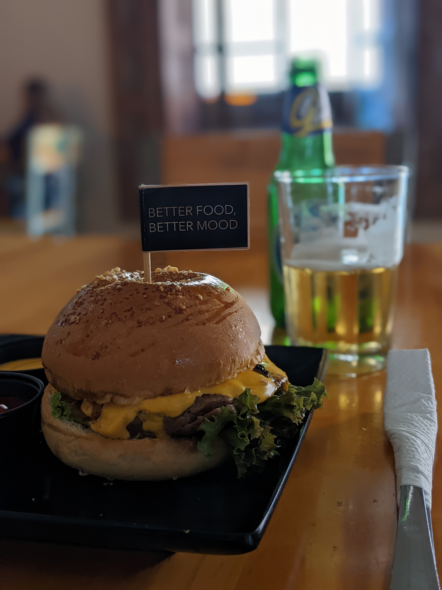
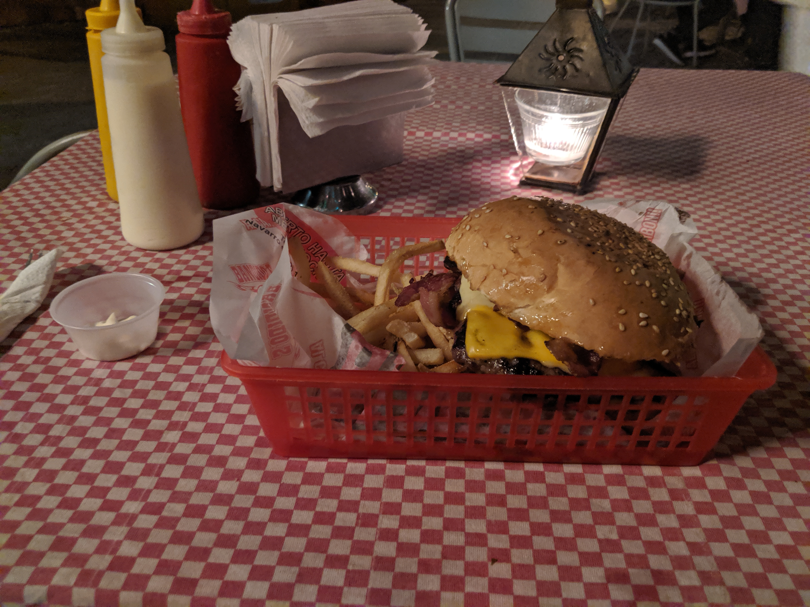
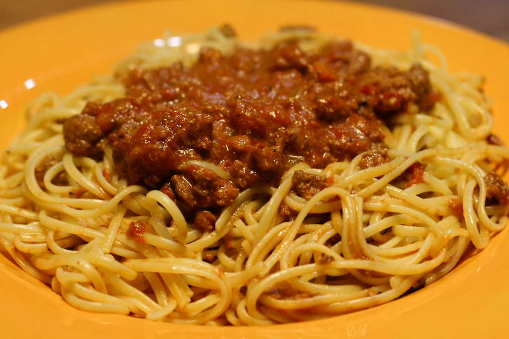
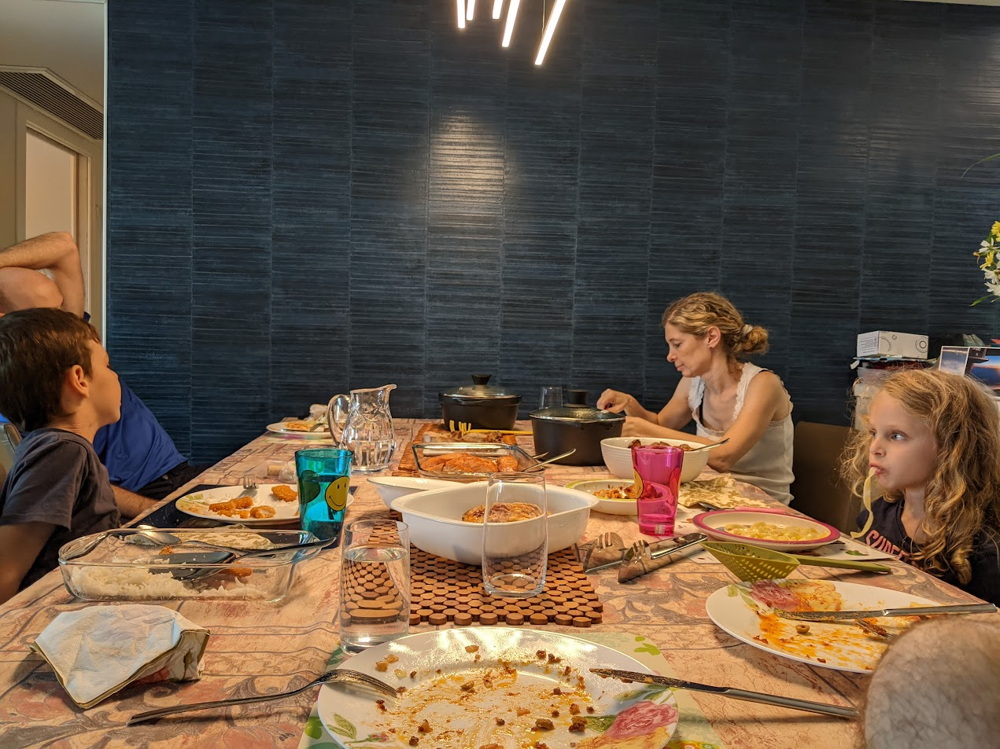
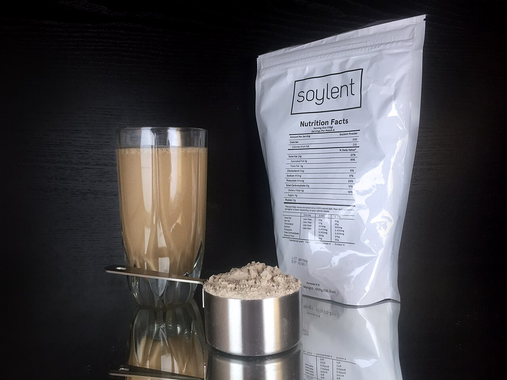

Boaz was very picky about food, avoiding most dishes and only enjoying a small selection of foods.
Boaz was very picky about food, avoiding most dishes and only enjoying a small selection of foods.

Boaz liked hamburgers. When he visited Yoav and Amit in NYC in 2016, he decided to visit all the burger joints in Timeout's list of top Burgers in NYC. Sometimes, that required him of eating a burger for lunch and burger for dinner. He managed. More generally, Boaz liked meat and cheese, and that's pretty much it. Below are some meat photos from his Google Photos album.



Boaz's favorite food was spaghetti bolognese. Mon used to make him enough to last him a couple of weeks, and he would eat it every day. He has videotaped Mon making it, believing that he would need to make it himself one day (crisis averted). Because he could not eat spaghetti bolognese twice a day, he had to find other foods to eat when at home. The other food was spaghetti with ketchup. Here is his plate after eating spaghetti bolognese.

Friends and family often badgered Boaz about his diet, arguing that it might not be ideal to live only on spaghetti bolognese and burgers.
Boaz frequently wondered whether unhealthy food was harming him throughout his life,
or if he can enjoy meat for now, and focus on healthier diet later.
Tired of the constant nagging, he longed for a simple, elegant solution.
That's where Soylent came in. Soylent was designed to provide all the nutrients one needs in a single artificial food.
The only problem was that Soylent didn’t ship to Israel. As a result, Boaz could only try it occasionally,
whenever someone close to him was in the U.S. and could bring some back. Well, the other problem was that Soylent tasted pretty awful,
and Boaz's whole idea was to avoid having to deal with unappetizing healthy food.
In the end, Boaz was right. He managed to live on bolognese and burgers, and it didn’t harm his health or have any negative effects.
